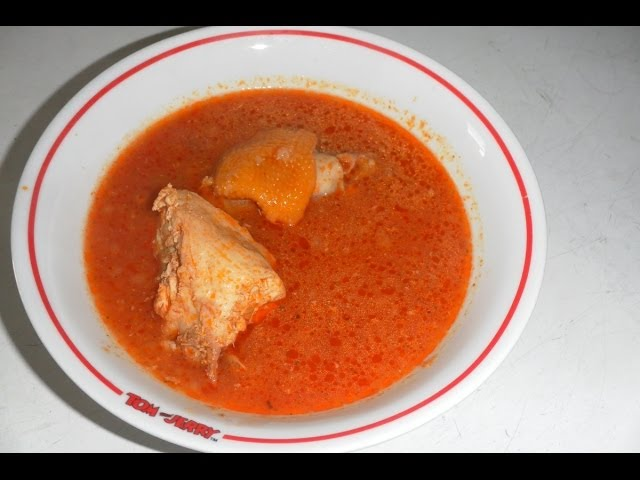

Light soup
Description
Most popular soup in Ghana, popularly served with Fufu
Ingredients
- Chilli Pepper
- Powdered pepper
- Fresh Tomatoes
- Garden eggs
- Fish or Meat
- Seasoning
- Onion
- Tomato Paste
Steps
- Boil the fresh tomato, pepper and onion.
- Properly wash your meat or fish.
- On low heat, cook your fish and add some diced onions, powdered pepper and salt to taste
- Blend your cooked vegetables.
- Add your blended vegetables to your fish or meat and allow to cook for 2 mins<./li>
- Add your preferred quantity of water to dilute and allow to boil.
- Then add your tomato paste, after a while add your seasoning.
- Remove the soup from fire after 30 mins.